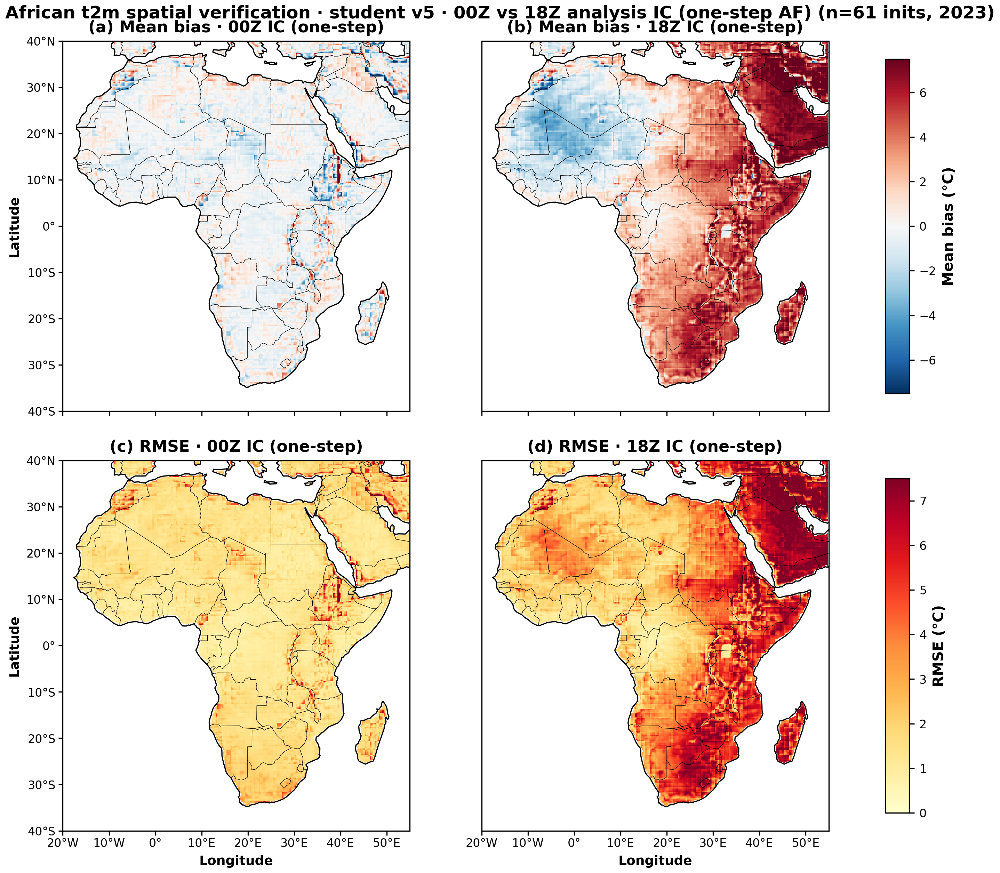
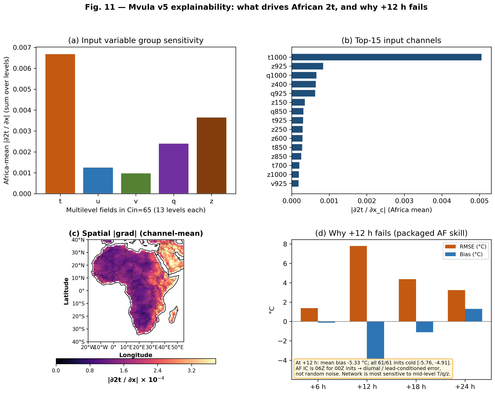

Try / dig deeper
- Model on Hugging Face (weights + model card)
- GitHub repo (code, dashboard, draft paper PDF)
- Local dashboard after clone:
python run_mvula.py dashboard
Built for NMHS colleagues, students, and AfriClimate AI explorers on everyday computers.
What it can / cannot do
Can
- Short-range African 2 m temperature orientation
- Run on CPU / laptop (~2.5 s per +6 h step)
- Open weights and documentation
Cannot (this freeze)
- Replace official national forecasts
- Free-running 10-day global weather
- Full precip / all-weather product
Packaged African t2m skill (2023, 61 × 00Z inits)
Analysis-forced one-step only (native +6 h). Columns are analysis IC hours for a 00Z campaign — not autoregressive lead times.
| Analysis IC | RMSE (°C) | ACC | Bias (°C) |
|---|---|---|---|
| 00Z (headline) | 1.38 | 0.97 | −0.12 |
| 06Z | 7.80 | 0.45 | −5.33 (cold bias) |
| 12Z | 4.38 | 0.75 | −1.12 |
| 18Z | 3.23 | 0.84 | +1.30 |
Headline claim = 00Z one-step. Documented pathology = 06Z IC cold bias (all 61 inits). Free-run / AR not supported (Cout=3).
Spatial skill (00Z vs 18Z IC)

Explainability

Team & credit
Team Mvula · Mentors: Shruti Nath, Rendani Mbuvha, Mario Santa Cruz López · GPU support: Cassava AI Factory · HPC: CHPC Lengau · Programme: ECMWF Code for Earth.
Apache-2.0 code · research student weights · AIFS teacher terms remain separate.